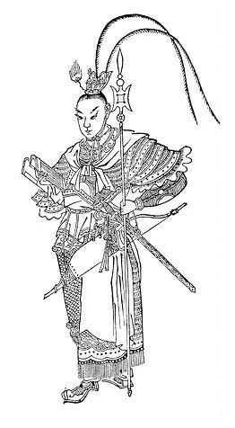
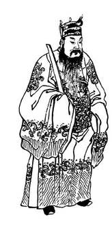
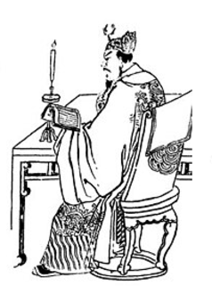
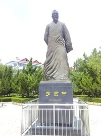
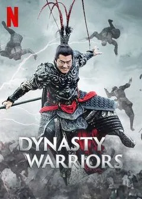

Lü Bu de son nom social “Fengxian” est de nationalité chinoise. Il est né entre 153
et 156, mais où reste inconnu car il n’y a pas de trace historique de son lieu de naissance,
contrairement à sa mort qui a eu lieu à la White Gate Tower le 7 février 199.

BIOGRAPHIE / FAITS MARQUANTS :

Dong Zhuo

Ding Yuan
Lü Bu était un général puis un petit seigneur de guerre de l’époque de la fin de la
dynastie Han. Il est particulièrement connu en tant que traitre , ayant trahi et tué ses deux
pères adoptifs, Ding Yuan en 189 et le tyran Dong Zhuo en 192.
C’est cette habitude à trahir qui l’exécuta , après avoir trahi le gouverneur Liu Bei par deux
fois en 196 et 198 et pris possession de la province de Xu, il fut capturé par le seigneur de
guerre Cao Cao. Ce dernier pensa un moment le garder à son service, mais après avoir considéré
ses multiples trahisons, préféra l'exécuter par strangulation en 199.
Découvrez une histoire sur Lü Bu et celle de ses grades
Lorsque l’inspecteur de la province, Ding Yuan est promu au rang de colonel de
la cavalerie, il prend Lü Bu sous ses ordres et le nomme maître des registres.
En 189, à la mort de l’empereur Lingdi, et à la suite de la crise de succession, Ding Yuan
se rend avec son armée à Luoyang et emmène Lü Bu avec lui.
Désireux d'annexer également les troupes de Ding Yuan, Dong Zhuo convaint Lü Bu de trahir
Ding Yuan, ce qu’il fait en lui apportant sa tête et reçoit en récompense le rang de colonel
de la cavalerie.
Lü Bu se révèle être un cavalier et archer accompli, d'une grande force physique, et reçoit
le surnom de « général volant ». Plus tard, il est promu au rang de général de corps d'armée
impérial et reçoit le titre de marquis de Douting.
Un jour, Lü Bu commet une petite faute et Dong Zhuo, furieux, saisit une petite hallebarde
et la jette contre lui. Lü Bu parvient à l'esquiver et à faire accepter ses excuses, mais
après cet incident conçoit de la rancœur envers Dong Zhuo. Lü Bu, également chargé de la
protection des appartements de Dong Zhuo, a une aventure avec une de ses servantes, Diaochan
et vit dans l'angoisse qu’il la découvre.
En mai 192 ,Lü Bu se confie au ministre du Peuple Wang Yun, et le père de Diaochan. Ce
dernier conspirait alors contre Dong Zhuo et propose à Lü Bu de le rejoindre . Initialement,
Lü Bu refuse, cependant Wang Yun fini par le convaincre et Lü Bu accepte de se rallier au
complot de Wang Yun.
Le 22 mai, Lü Bu se rend aux portes du palais de Chang'an avec une dizaine d'hommes, dont le
colonel de la cavalerie Li Su, pour accueillir Dong Zhuo. Li Su attaque Dong Zhuo, et
celui-ci, alarmé, appelle Lü Bu à l'aide. Lü Bu dit simplement : « J'ai un ordre impérial »
avant de le tuer. Le maître des registres Tian Jing se précipite auprès du corps de Dong
Zhuo mais Lü Bu l'abat également. En récompense, Wang Yun le nomme « général qui provoque le
prestige » et marquis de Wen.
OEUVRES SUR LÜ BU :
Son personnage fut popularisé au XIVe siècle par le roman Historie des Trois
Royaumes de Luo Guanzhong. Il y est présenté comme un guerrier invincible, maître de la
hallebarde et de l’arc, chevauchant le cheval Lièvre Rouge capable de parcourir mille li en une
journée.
Selon un proverbe de l'époque: « Parmi les hommes il y a Lü Bu, parmi les chevaux, il y a Lièvre
Rouge. » Cependant, il y est également dépeint comme une personne arrogante, fourbe et aisée à
manipuler.

Statue de Luo Guanzhong
Dans le film Dynasty Warriors, Lü Bu est représenté comme une force quasi mythique,
surpassant tous les autres guerriers sur le champ de bataille. Manieur redoutable de la
hallebarde, il est montré comme invincible, affrontant seul des armées entières avec une
brutalité spectaculaire. Sa puissance physique et martiale inspire la crainte autant que
l’admiration, faisant de lui une figure centrale du chaos guerrier. Toutefois, le film suggère
aussi son caractère instable et orgueilleux, laissant entendre que sa soif de puissance et son
arrogance contribuent à sa chute.

Affiche de Dynasty warriors
Ce manga ayant commencé sa parution le 19 mai 2018 au Japon, puis le 5 septembre
2019 en France, Valkyrie Apocalypse nous invite dans un univers où les dieux, lassés de
l’humanité, décident de son extinction. Pour lui offrir une ultime chance, les Valkyries
organisent le Ragnarök : un tournoi opposant treize dieux à treize représentants de l’histoire
humaine. Lü Bu y apparaît comme le tout premier champion de l’humanité, incarnant la force brute
et l’esprit guerrier. Fidèle à sa légende, il est montré comme un combattant surhumain, maniant
sa hallebarde avec violence, recherchant avant tout un adversaire digne de lui.